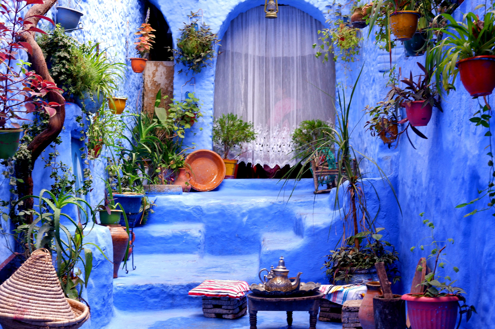
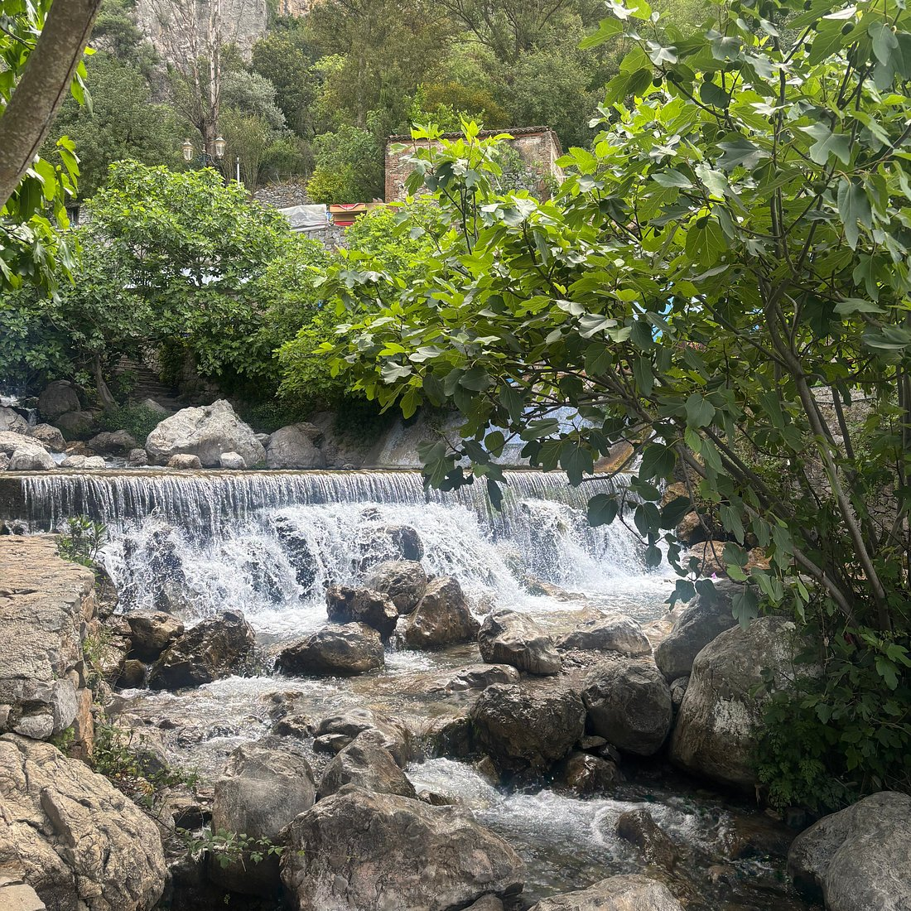
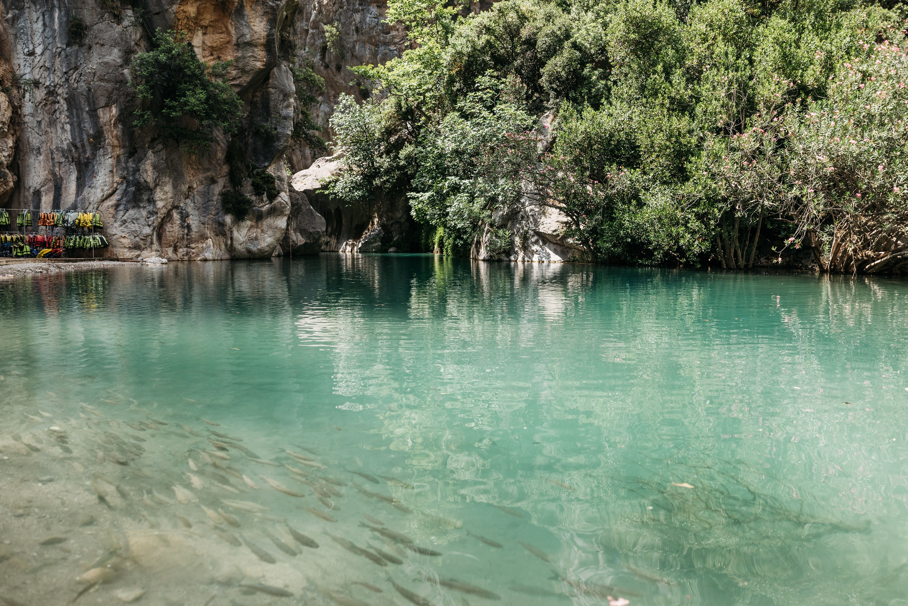
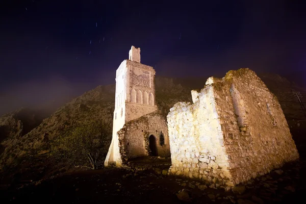

Commencez votre séjour par une promenade au cœur de la célèbre médina de Chefchaouen. Laissez-vous séduire par ses ruelles peintes en bleu et blanc, ses escaliers colorés et ses portes traditionnelles. Découvrez les petites boutiques d'artisanat et profitez de l'atmosphère paisible de cette ville nichée dans les montagnes du Rif.

Découvrez Ras El Ma, une source naturelle située à la sortie de la médina, où l'eau fraîche descend des montagnes. Profitez d'une promenade dans ce cadre paisible avant de visiter la place Uta el-Hammam et d'admirer la Kasbah historique. Terminez la journée par un moment de détente dans un café traditionnel face à la place animée.

Partez à la découverte d'Akchour, un site naturel réputé pour ses eaux turquoise, ses cascades et ses montagnes verdoyantes. Empruntez les sentiers de randonnée au fil de la rivière et profitez de paysages spectaculaires au cœur du parc national de Talassemtane. Une journée idéale pour se ressourcer loin de l'agitation urbaine.

Terminez votre séjour par une promenade vers la mosquée espagnole, située sur les hauteurs de Chefchaouen. Après une courte randonnée, admirez une vue panoramique sur les toits bleus de la ville et les montagnes environnantes. Profitez ensuite d'un dernier moment dans la médina pour acheter quelques souvenirs artisanaux avant votre départ.
| Option de Séjour | Hébergement (Hôtels 4★) | Inclus | Prix / Pers. |
|---|---|---|---|
| Pack Évasion | Hôtels 4★ (Charme & Confort) | Transport + Hébergement + Petit-déjeuner | 2 900 MAD |
| Pack Signature | Hôtels 4★ Sup (Vue Montagne) | Demi-pension + Guide + Excursion à Akchour | 4 500 MAD |
| Pack Excellence | Hôtels 5★ ou maisons d'hôtes de charme | Pension Complète + Transport Privé + Excursions Personnalisées | 6 900 MAD |